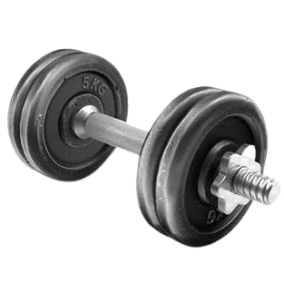
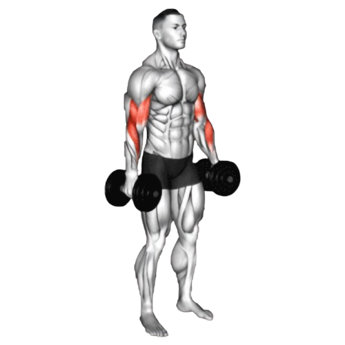

덤벨 바이셉 컬

- 양손에 덤벨을 각각 들고, 발을 어깨너비로 벌려 똑바로 선다.
- 손바닥이 앞으로 향하도록 하고, 팔꿈치를 몸통 옆에 고정하여 시작 자세를 취한다.
- 이두근의 수축을 느끼며 숨을 내쉬면서 천천히 덤벨을 어깨 방향으로 들어 올린다. 이때 팔꿈치는 몸통 옆에서 고정되도록 유지한다.
- 팔꿈치가 최대한 굽혀지고 이두근이 충분히 수축될 때까지 덤벨을 들어 올린 후, 천천히 시작 위치로 돌아온다.
- 천천히 팔을 내려 원래 위치로 돌아옵니다. 양팔을 번갈아가며 반복한다.
주의사항
- 덤벨을 들어 올릴 때 숨을 내쉬고, 덤벨을 내릴 때 숨을 들이마신다.
- 팔꿈치가 앞뒤로 움직이지 않도록 고정한다.
- 덤벨을 들어올릴 때 반동을 사용하지 않는다.
- 지나치게 무거운 중량은 잘못된 자세를 유발할 수 있어 부상의 원인이 된다.
운동부위 및 효과
- 이두근, 전완근
- 이두근의 모양을 만들고, 탄탄한 팔 라인을 형성하는 데 효과적이다.